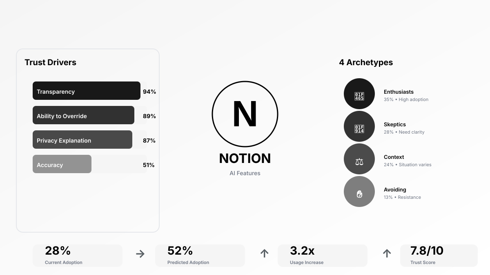
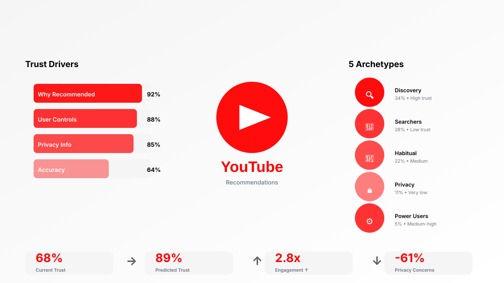
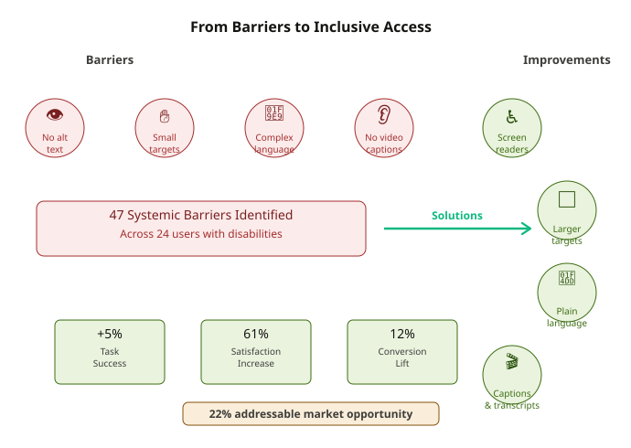
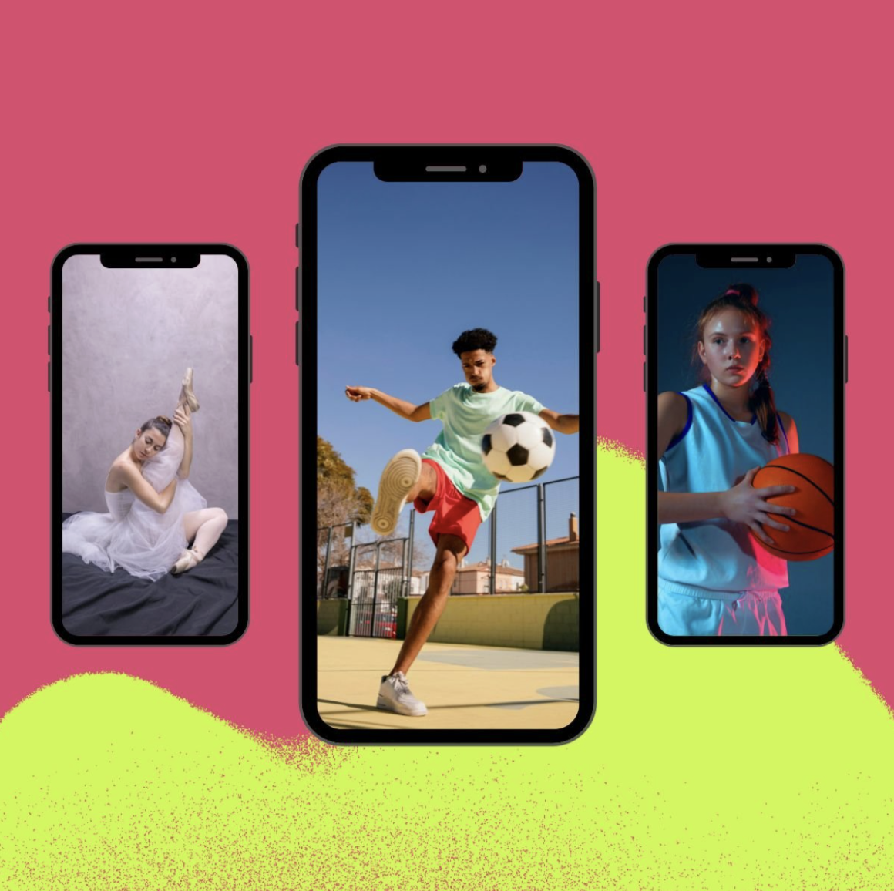
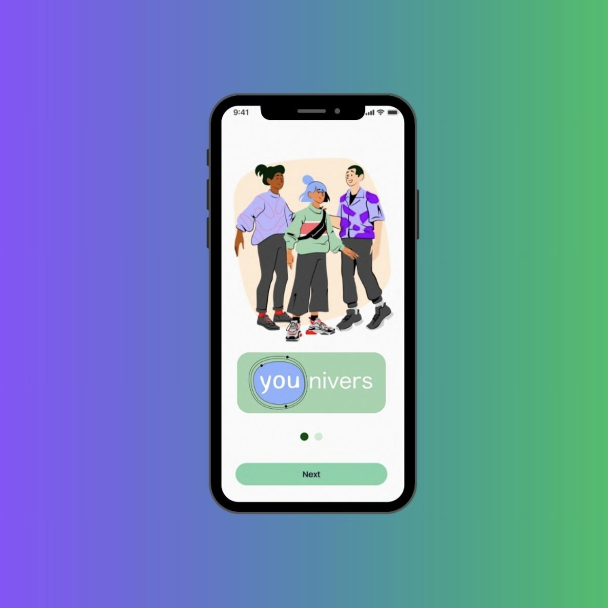
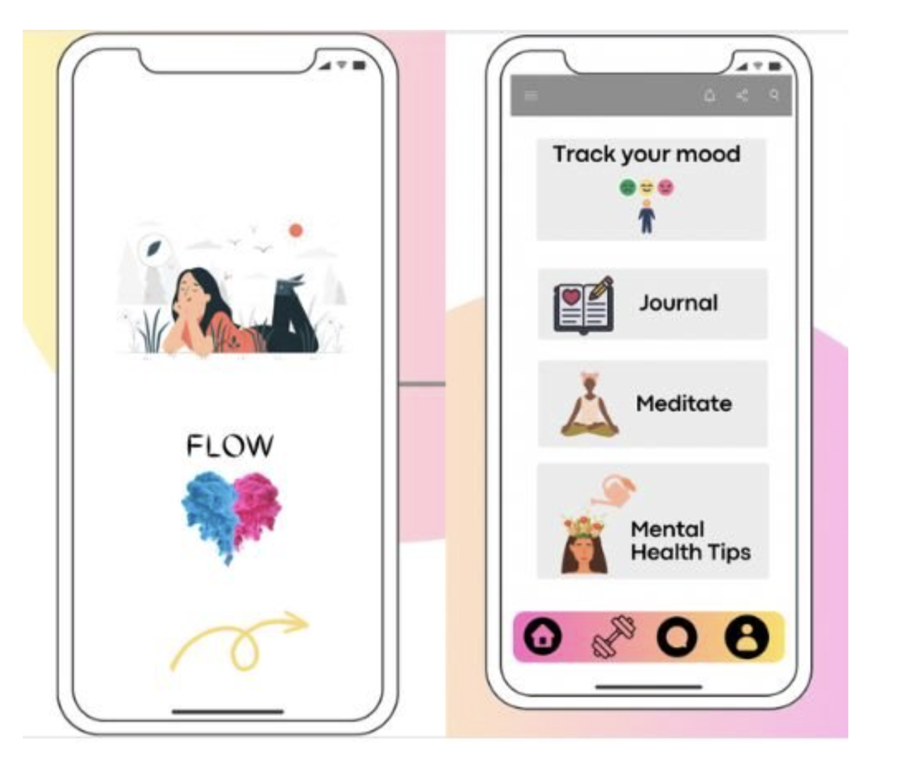

I design experiences that feel human.
As a psychologist and UX researcher, I start from empathy—understanding
not just what users do, but why they do it. I research mental models,
decision-making psychology, and the moments when trust is built or broken.
I've researched accessibility barriers in fintech, user trust in AI systems,
and behavior change in health apps. Every project combines rigorous methodology
with deep user empathy to create experiences that actually work for people.
My passion: making technology that respects user autonomy, builds real trust,
and delivers genuine value.
UX Tools I like working with: usertesting.com, userzoom,
Miro, and Dovetail. P.S I keep on exploring new tools.
AI Trust & Adoption in Health Coaching

Research examining how users build trust in AI-powered health recommendations. Conducted 32 in-depth interviews and A/B tested transparency approaches, discovering that trust forms through predictability (92%) rather than accuracy (51%). Identified three user archetypes with distinct trust barriers. Implementation of visual reasoning + human oversight increased adoption from 53% to 71% and engagement lift by 4.2x.
Building Trust in Notion AI: Feature Adoption Research

Hypothetical UX research study examining user trust in AI-powered note-taking features. Identified four user archetypes with distinct trust barriers and adoption triggers. Key finding: transparency (94%) drives trust more than accuracy (51%). Predicted that implementing transparent UI, redesigned onboarding, and context-based features would increase adoption from 28% to 52% and trust scores from 4.2 to 7.8/10.
YouTube Recommendation Trust: Building Confidence in Algorithmic Discovery

Hypothetical UX research examining user trust in YouTube's recommendation algorithm. Identified five distinct user archetypes with different recommendation preferences and trust barriers. Key finding: transparency and control (92% + 88%) drive trust more than algorithm accuracy (64%). Predicted that implementing "why recommended" explanations, visible controls, and privacy transparency would increase trust from 68% to 89% and engagement by 2.8x while reducing privacy concerns by 61%.
Accessibility Research: Financial Inclusion Study

Mixed-methods UX research examining accessibility barriers in fintech products. Conducted 24 in-depth interviews with users with disabilities, identified 47 systemic barriers, and quantified a 22% addressable market opportunity. Delivered WCAG 2.1 AA compliance roadmap with measurable impact: +5% task success rate, 61% user satisfaction increase, and 12% conversion lift.
UX Research, Competitive Analysis & Journey Mapping of Performance Boosting app for Young Athletes

A start-up called Boosters approached me to learn more about their prospective users, to do competitive analysis, and to design user journey mapping for their performance boosting app for young athletes.
Competitive Analysis & Content Testing: Comprehensive, Cloze, A/B & Guerrilla Testing

I worked with the mental health app to do user experience research on their content. I utilized following UXR techniques: Comprehensive, Cloze, A/B & Guerrilla Testing through out the year on every piece of content that was produced.
User research, competitive analysis and testing the MVP of a mental health app.

Flow developed a mental health app to help people learn social and emotional skills to cope with life challenges. They approached me to evaluate their MVP, learn more about prospective users, find a way to keep learners engaged and motivated, and recommend UXR based insights to optimize the app's performance.